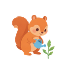

A · 首次引导 Step 1｜松鼠欢迎 + 仪式性清空
今日打卡
今天也要加油哦
来添加你的第一个任务吧！

果果
嗨！我是果果🐿️～我们一起种一棵小树苗吧！我先帮你把旧数据清清，从零开始养成好习惯！
B · 首次引导 Step 3｜高亮任务勾选 = 打卡
今日打卡
今天也要加油哦
📚
每天读书
✓
🏃
运动 10 分钟
果果
点这里的小圆圈，就能给「运动」打卡啦！完成后它会变绿哦，你真棒💪
C · 首次引导 Step 7｜改头像触发 G3 授权弹窗
我的成长
小树苗在长大
苗成长小树苗
微信小程序隐私保护指引
在继续使用前，请阅读并同意《微信小程序隐私保护指引》。
你选择的头像、昵称仅保存在这台手机里，不会上传到网上。
你选择的头像、昵称仅保存在这台手机里，不会上传到网上。
《微信小程序隐私保护指引》›
D · 引导完成｜「你的小树苗发芽啦！」
今日打卡
今天也要加油哦
📚
每天读书
✓
🏃
运动 10 分钟
✓
🌟 你的小树苗发芽啦！🌟
你学会打卡啦，这些小任务已经留在你的手机里～
E · 常驻操作手册单页（G4）｜纯静态图文 + 松鼠拟人
操作手册
✕
不会用的时候，随时来找我哦！我是果果，陪你一起养成好习惯～
➕
添加任务
点「任务」页的 + 号，写下想养成的小习惯。
果果：从小目标开始最容易坚持！
✅
每天打卡
完成就点小圆圈，它会变绿，火焰也会亮起来🔥。
果果：坚持一天就很了不起！
📅
补卡
漏了哪天？点日历选那天补上就好。
果果：没关系，补上就好啦～
🌈
看日历
绿=全完成，橙=有补卡，黄=有任务，灰=没打卡。
果果：看颜色就知道你多棒！
🏅
看徽章
坚持会解锁小徽章，收集起来超有成就感。
果果：徽章是你努力的勋章！
🐿️
换头像昵称
在我的成长页点头像就能换，只存在本机哦。
果果：换成你喜欢的样子吧！
F · 我的成长页｜增量新增「操作手册」入口（§3.10）
我的成长
小树苗在长大
📖
新增
操作手册
不会用？果果带你一步步看
3 天
连续打卡
12
星星
本月日历
（线上原样模块，本稿不改动）